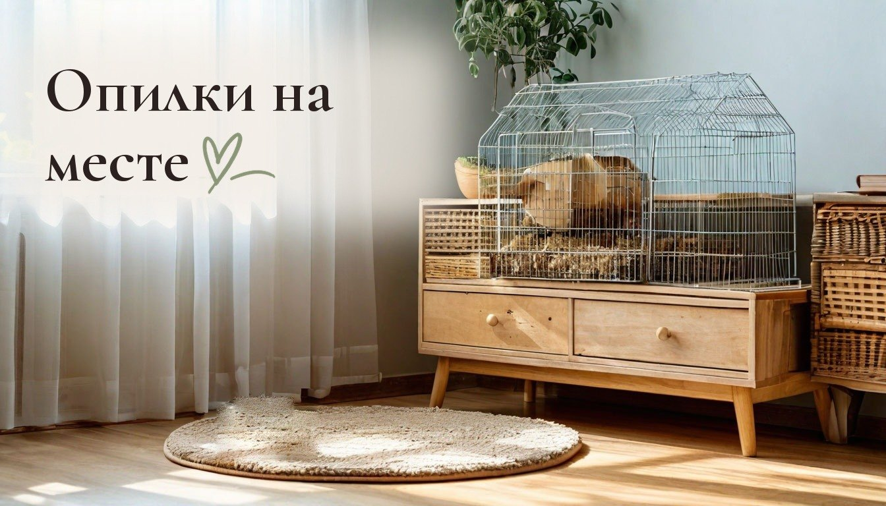
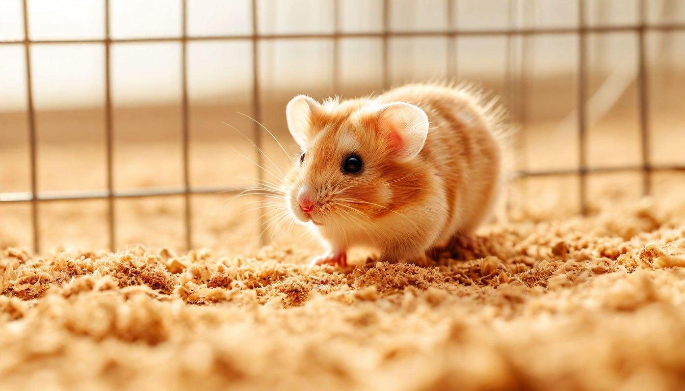

Какие опилки нужны хомяку, чтобы они не разлетались по всей комнате: 5 ошибок

Полчаса назад я пропылесосила под клеткой. Сейчас там снова дорожка из опилок, а один из наших двух хомяков с довольным видом роет угол.
Хомяки копают, это их природа, и отучить их невозможно. Но то, сколько опилок оказывается на полу, зависит не только от хомяка. Многое решают сам наполнитель, клетка и то, где стоят колесо и домик. А заметнее всего это вечером: хомяки ночные, и раскопки начинаются как раз тогда, когда дома все ложатся спать.
Легко решить, что это просто цена за домашних животных. Но часть беспорядка зависит от нас самих, и её можно убрать без борьбы с хомяком.
Мелкие опилки летят сами
Самые дешёвые опилки похожи на пыль с мелкой стружкой. Хомяк их почти не роет, а скорее разбрасывает: лёгкие частицы летят через прутья даже от его бега.
Что делать: брать крупную прессованную стружку или древесные гранулы. Они тяжелее и падают обратно в поддон. Подходят и целлюлозный или кукурузный наполнитель: целлюлоза мягкая и почти не пылит, кукурузные гранулы тяжёлые. Ароматизированные лучше не брать, у хомяков чувствительный нос.

Пыль из пачки остаётся в клетке
Хозяева хомяков часто спрашивают, нужно ли просеивать опилки. Ответ простой: да. В любой пачке есть мелкая пыль, и именно она оседает на мебели вокруг клетки.
Что делать: перед засыпкой просеять порцию через крупное сито или дуршлаг над пакетом. Это пять минут работы, а пыли вокруг клетки становится меньше. Просеянную пыль сразу завяжите в пакете, иначе она разлетится уже из мусорного ведра.
Колесо у прутьев работает как катапульта
Самый неочевидный виновник беспорядка. Когда колесо стоит вплотную к стенке, хомяк на бегу выкидывает лапами опилки прямо за решётку, и часто летят они дальше всего.
Что делать: поставить колесо ближе к центру клетки или на подставку, чтобы под ним не было наполнителя. Ещё лучше колесо со сплошной стенкой без щелей: через щели опилки вылетают вбок.
Низкий поддон не держит раскопки
У многих клеток поддон высотой всего пару сантиметров. Хомяк роет нору, и всё, что он вытолкнул наверх, сразу оказывается снаружи.
Что делать: выбрать клетку или контейнер с бортиком не ниже 10 сантиметров либо поставить вокруг низкого поддона прозрачный пластиковый экран. Он продаётся в зоотоварах и снимается для уборки. Слой наполнителя при этом уменьшать не нужно: хомяку важно рыть, и толстый слой в высоком поддоне лучше, чем тонкий в низком.
Под клеткой голый пол
Даже при хорошем наполнителе что-то всё равно вылетит. Если клетка стоит прямо на полу или комоде, опилки разносятся по всей комнате на тапках и на лапах кошки.
Что делать: положить под клетку коврик или поддон шире её на 10–15 сантиметров с каждой стороны. Его можно вытряхнуть за минуту, а не пылесосить всю комнату. Удобнее всего резиновый коврик для прихожей: опилки не застревают в ворсе и легко ссыпаются.
От автора
У нас дома бенгальская кошка, двое детей и два хомяка, поэтому уборка здесь никогда не заканчивается окончательно. И мне кажется, это нормально: дом, где живут, не обязан выглядеть как в каталоге.
Но разница между «пылесосить каждые полчаса» и «вытряхнуть коврик вечером» огромная. Особенно когда в доме дети, которые сидят на полу, и кошка, которая разносит всё по углам. Ради неё стоит один раз переставить колесо и просеять пачку опилок.
Это первая история из серии «Дом, где двое детей, кошка и хомяки». В четверг продолжу: как приучить ребёнка убирать за собой, если просьбы не работают. Подписывайтесь, чтобы не пропустить.
А что у вас дома мусорит сильнее всего: дети, кошка или кто-то ещё?